Questão 1 · Componentes do partograma · 4000187237Uma gestante dá entrada na maternidade em trabalho de parto. Ao toque colo dilatado 4 cm, bolsa rota, apresentação cefálica. Aberto o partograma de Friedmann, o Obstetra deve traçar a linha de ação:
A 2 horas após a linha de alerta.
B 2 horas antes da linha de alerta.
C 4 horas após a linha de alerta.
D 4 horas antes da linha de alerta.
Questão 2 · Período expulsivo prolongado · 4000186696Paciente G3 PV2 é admitida em pronto atendimento obstétrico em trabalho de parto espontâneo com 38 semanas e 6 dias. Ao verificar o partograma, o plantonista constata que essa se encontra em período expulsivo há 3 horas, sem raquianestesia. Ao examinar verifica-se colo dilatado 10cm, feto cefálico em OP e plano +2 de De Lee. Assinale a alternativa que apresenta o diagnóstico e a conduta MAIS apropriada para essa paciente:
A Parada secundária da descida e estimular verticalização.
B Parada secundária da dilatação e prescrever ocitócito.
C Período expulsivo prolongado e propor parto vaginal operatório.
D Período expulsivo adequado e manter acompanhamento do trabalho de parto.
Questão 3 · Parada secundária da descida · 4000186535Uma mulher de 24 anos de idade, G2P0A1, no decorrer de 41 semanas de gestação, encontrase em fase ativa do trabalho de parto, está fazendo força, mas sem progresso. O desenvolvimento do trabalho de parto está caracterizado no partograma abaixo. A análise adequada do caso clínico é:

A O partograma demonstra período pélvico prolongado, pois a descida da apresentação é progressiva, mas excessivamente lenta.
B A evolução do trabalho de parto é normal, pois a paciente foi submetida à analgesia peridural.
C O partograma evidencia evolução anormal do trabalho de parto. A causa mais frequente desse tipo de distocia é a desproporção céfalopélvica.
D Houve uma parada secundária da dilatação e deverá ser aplicado um fórcipe de Simpson para ultimação do parto.
Questão 4 · Fase ativa prolongada · Aspectos f etais · 4000186105Você está acompanhando uma paciente secundigesta, com 1 parto normal prévio, em trabalho de parto. Após 6 horas de evolução, você identi ca no partograma uma distócia por hipoatividade uterina. Nesta situação e considerando-se o partograma, qual é a conduta imediata mais indicada?
A Cesárea.
B Expectante.
C Analgesia.
D Ocitocina via oral.
E Ocitocina endovenosa.
Revisar: possível letra faltando em enunciado
Questão 5 · Obstetrícia · Partograma · 4000184710Primigesta, gestação de risco usual, com a evolução do trabalho de parto demonstrada no partograma abaixo. Assinale a alternativa que contém o tipo de distócia apresentada e a conduta obstétrica:

A Parada secundária da descida e fórceps de rotação
B Parada secundária da descida e operação cesariana
C Fase ativa protraída e infusão intravenosa de ocitocina
D Desproporção cefalopélvica relativa e infusão intravenosa de ocitocina
Questão 7 · Obstetrícia · Partograma · 4000182119Primigesta, 32 anis, 41 semanas de gestação de risco habitual. Interna na fase ativa da dilatação para assistência ao parto. Na admissão apresentava sinais vitais e exame físico geral normal, altura uterina=38 cm, vitalidade fetal normal. A evolução gráfica de seu trabalho de parto está representada abaixo (Figura). Qual é a conduta para após a avaliação das 20h?

A Aguardar mais uma hora de período expulsivo.
B Realizar parto instrumentalizado.
C Realizar amniotomia artificial.
D Estimular a paciente a realizar puxos dirigidos.
Questão 8 · Parto vaginal operatório · Distocia f uncional de objeto de trajeto · Obstetrícia · 4000181884Uma primigesta, cardiopata por doença reumática, classe funcional NYHA I, com boa evolução do trabalho de parto, apresenta parada na progressão. A apresentação é occipito direita transversa e com assinclitismo anterior, plano +2 de DeLee. Os batimentos cardíacos fetais estão em 128bpm. Considerando o quadro clínico apresentado, a melhor conduta no momento seria:
A Cesariana de emergência.
B Fórcipe de Simpson.
C Fórcipe de Kielland.
D Fórcipe de Piper.
E Aguardar a evolução do parto.
Questão 9 · Distocia f uncional de objeto de trajeto · Obstetrícia · 4000181504Distocia é por definição a anormalidade no desenrolar do trabalho de parto, sendo apontada nos Estados Unidos como a indicação mais comum de cesárea em primigestas. Em relação à distocia analise as alternativas abaixo. I - A principal complicação associada ao diagnóstico de distocia é infecção, sobretudo a corioamnionite e suas conseqüências para o feto e para a mãe, e está diretamente relacionada à duração do trabalho de parto. II - De ne-se distocia funcional como a presença de anormalidade do fator contrátil durante o trabalho de parto, o que infuencia diretamente a progressão da dilatação cervical. III - A distocia por hiperatividade sem obstrução é comum em primiparas e caracteriza-se pela evolução rápida (menos que 3 horas) do trabalho de parto. É conhecida como parto taquitócico. Sobre esta situação selecione a opção correta.
A As afirmativas I e II são verdadeiras. A afirmativa III é falsa.
B As afirmativas I e III são verdadeiras. A afirmativa II é falsa.
C As afirmativas II e III são verdadeiras. A afirmativa I é falsa.
D As afirmativas I, II e III são verdadeiras.
E As afirmativas I, II e III são falsas.
Questão 10 · Obstetrícia · Partograma · 4000177541Partograma é um gráfico no qual são anotadas a progressão do trabalho de parto e as condições da mãe e as do feto. Quando bem utilizado, ele permite diminuição de intervenções desnecessárias e contribui para melhores desfechos obstétricos. Dessa forma, pode-se avaliar, com o auxílio dessa ferramenta, que
A o parto precipitado é diagnosticado quando a dilatação cervical bem como a descida e expulsão fetal ocorrem num período de até 4 horas.
B a dilatação do colo, na fase ativa prolongada, ocorre numa velocidade menor que 1 cm/hora e é indicativo de cesárea quando ultrapassa a linha de alerta.
C o registro do uso da ocitocina não é necessário, porém se deve anotar a intensidade das contrações uterinas.
D a parada secundária de dilatação é diagnosticada por 2 toques sucessivos, com intervalo de 1 hora no trabalho de parto ativo.
Questão 11 · Distocia f uncional de objeto de trajeto · Obstetrícia · 4000177540A distocia do parto é, por definição, a anormalidade no desenrolar do trabalho de parto, sendo apontada, nos Estados Unidos da América, como a indicação mais comum de cesárea em primigestas, e, no Brasil, não é muito diferente. Sobre a distocia, é INCORRETO afirmar:
A a distocia por hiperatividade sem obstrução é comum em primíparas e se caracteriza pela evolução rápida (menos que 3 horas) do trabalho de parto, sendo conhecida como parto taquitócico.
B a distocia tem como causa alterações em um ou mais dos três fatores determinantes para o sucesso do parto, a saber, a força, o trajeto e o objeto.
C a distocia tem como principal complicação a infecção, sobretudo, a corioamnionite e suas consequências para o feto e para a mãe, estando diretamente relacionada à duração do parto.
D a distocia funcional é definida como a presença de anormalidade do fator contrátil durante o trabalho de parto, o que influencia diretamente a progressão da dilatação cervical.
Questão 12 · Período expulsivo prolongado · 4000175594Analise o partograma a seguir. Com base no partograma, o diagnóstico é de
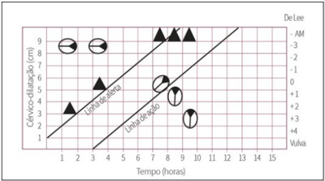
A período expulsivo prolongado.
B parada secundária da descida.
C parada secundária de dilatação.
D fase ativa prolongada.
Questão 13 · Parto taquitócito · 4000171085M.K.T., 32 anos, G6 P5 C0 A0, com gestação de 40 semanas e 2 dias foi admitida em trabalho de parto conforme o partograma apresentado a seguir. Após 20 minutos da última avaliação (hora de registro 3), a paciente evoluiu para um parto vaginal sem lacerações e com recém-nascido em boas condições. A dequitação placentária ocorreu após 8 minutos do nascimento, sem intercorrências. Com relação à evolução desse trabalho de parto, assinale a opção correta.
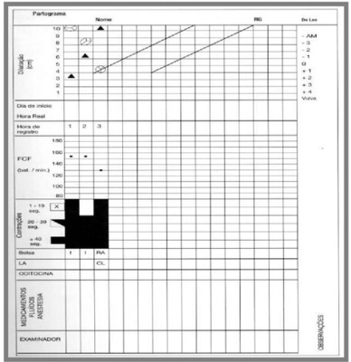
A Trata-se de uma distócia funcional do trabalho de parto por hipoatividade.
B Trata-se de uma distócia funcional do trabalho de parto por hiperatividade.
C Trata-se de uma distócia de dilatação.
D Trata-se de um trabalho de parto com evolução normal.
E Trata-se de uma distócia de rotação
Questão 14 · Parto taquitócito · 4000170391Uma gestante em trabalho de parto espontâneo se encontra com dilatação cervical de 6cm, feto em apresentação cefálica e dinâmica uterina de 6 contrações em um intervalo de 10 minutos. Qual dos termos a seguir adequadamente descreve essa situação?
A Contratilidade normal
B Hipersistolia
C Taquissistolia
D Hiperestímulo uterino
Questão 15 · Partograma · 4000169295O partograma esquematizado mostra a evolução de um parto por via vaginal, no qual ocorreu uma distócia da dilatação (fase ativa prolongada). Uma das causas envolvidas para essa ocorrência é: Imagens anexas:

A Contrações uterinas ineficazes
B Desproporção cefalopélvica absoluta
C Desproporção cefalopélvica relativa
D Distócia de trajeto mole
Questão 16 · Parada secundária da descida · 4000168171Considere que uma paciente de 28 anos de idade, G1 PV0 A0, com 40 semanas e seis dias de gestação, chega à maternidade relatando contrações uterinas dolorosas. Nega perda de líquido ou sangramento genital. Ao ser examinada, sua PA é de 120 x 80 mmHg e a FC é de 86 bpm. As contrações uterinas estão ocorrendo a cada cinco minutos e o BCF é 140 bpm. Ao toque vaginal, o colo está com 3 cm de dilatação e 50% apagado, a bolsa está íntegra e o polo cefálico está alto. Não desejou analgesia durante o acompanhamento do trabalho de parto. Analise o padrão de dilatação do colo uterino e da descida do polo cefálico a seguir e assinale a alternativa correta.
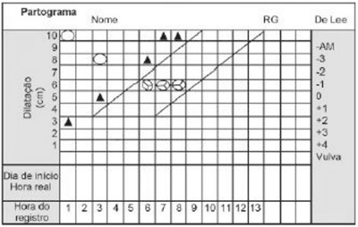
A Trata-se de um caso de parada secundária da descida.
B Essa distócia é diagnosticada por dois toques sucessivos, com intervalo de duas horas ou mais, estando a paciente em trabalho de parto ativo.
C É frequente nesse tipo de distocia a contratilidade uterina deficiente.
D Estava indicado uso de fórceps na sexta hora de avaliação.
Questão 18 · Partograma · 4000167150O partograma é um gráfico no qual são anotadas a progressão do trabalho de parto e as condições materno-fetais. Analise o seguinte partograma e assinale a alternativa correspondente com o padrão encontrado.
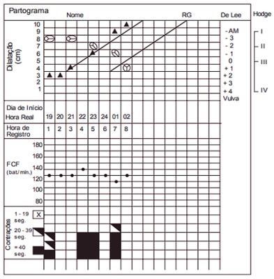
A Fase ativa prolongada.
B Parada secundária da descida.
C Desproporção cefálo-pélvica.
D Distócia funcional.
E Trabalho de parto fisiológico.
Questão 19 · Partograma · 4000165646Mulher de 22 anos de idade, secundigesta com um parto cesáreo anterior com recém-nascido de 2632g há 4 anos. Chega ao pronto atendimento com dor em hipogástrio. Hoje está com 38 semanas e 2 dias de gestação e o pré-natal transcorreu sem intercorrências. Ao exame: PA 110x72 mmHg, FC 88 bpm, dinâmica uterina presente de 3 contrações em 10 minutos, BCF 144 bpm, altura uterina de 35 cm, toque com colo no pérvio para 6 cm, apresentação cefálica, alta e xa, bolsa integra, amnioscopia líquido claro com grumos grossos. Após análise do partograma, qual o diâmetro que estaria impedindo a descida da apresentação?


A A.
B B.
C C.
D D.
Questão 20 · Partograma · 4000165038Em acompanhamento de trabalho de parto a termo, uma parturiente encontra-se com três contrações uterinas a cada 10 minutos. A vitalidade fetal está boa e a dilatação cervical é de 5cm. Após algum tempo, constata-se colo completamente dilatado, bolsa rota, 5 contrações uterinas a cada 10 minutos, batimentos cardiofetais em 80bpm. A apresentação fetal encontra-se em –3, variedade de posição Occipto púbica. Considerando os dados do caso, indique a melhor conduta obstétrica.
A Parto cesariano de urgência.
B Fórceps ou vácuo-extrator.
C Manobra de Kristeler.
D Estimular o puxo e realizar episiotomia.
Questão 21 · Partograma · 4000165037Em acompanhamento de trabalho de parto a termo, uma parturiente encontra-se com três contrações uterinas a cada 10 minutos. A vitalidade fetal está boa e a dilatação cervical é de 5cm. Após algum tempo, constata-se colo completamente dilatado, bolsa rota, 5 contrações uterinas a cada 10 minutos, batimentos cardiofetais em 80bpm. A apresentação fetal encontra-se em –3, variedade de posição Occipto púbica. Indique o momento no qual o partograma deve ser aberto.
A No início do período de dilatação.
B No início do período expulsivo.
C Na fase ativa do trabalho de parto.
D Na admissão da parturiente no centro obstétrico.
Questão 22 · Funcional · Parada secundária da dilatação · 4000174168Em um partograma estão anotados os seguintes dados: Contrações: 4 de 40 segundos de forte intensidade; Bolsa íntegra; Dilatação: 4 cm pelas 3 últimas horas; Apresentação: ODP-1 FCF: 136. Pode-se concluir que
A a apresentação é cefálica, a posição é esquerda e o feto não está insinuado.
B a dinâmica uterina está adequada para a fase do trabalho de parto.
C se deve introduzir ocitocina em bomba de infusão para melhorar a dinâmica, pois o colo ainda está com 4 cm, sem modificações há 3 horas.
D se deve fazer analgesia para melhorar a provável distócia funcional.
E se deve indicar via alta pela parada de progressão.
Questão 23 · Apresentação f etal · Dinâmica uterina · Dilatação cervical · 4000173762No preenchimento do partograma, além dos batimentos cardíacos fetais e das contrações uterinas, deve-se estar atento a:
A Dilatação do colo uterino, plano de De Lee da apresentação, variedade de posição, estado da membrana amniótica.
B Pressão arterial materna, dilatação do colo uterino, plano de De Lee da apresentação, estado da membrana amniótica.
C Dilatação do colo uterino, variedade de posição, plano de De Lee da apresentação, esvaecimento do colo uterino.
D Esvaecimento do colo uterino, estado da membrana amniótica, variedade de posição, pressão arterial materna.
Questão 24 · Diagnóstico de distocias no partograma · Parada secundária da dilatação · Distocia de dilatação · 4000173417Parturiente com 6 cm de dilatação em 2 toques consecutivos, bolsa íntegra, liquido claro com grumos, dinâmica uterina de 3 contrações em 10 minutos com duração de 35 segundos cada, feto em plano -1 de De Lee. Avaliando o partograma, observa-se ter ultrapassado a linha de alerta. Nesse caso, as melhores opções de imediato são:
A analgesia peridural e misoprostol.
B amniotomia e ocitocina.
C amniotomia e misoprostol.
D misoprostol e deambulação.
Questão 25 · Funcional · Assistencia ao parto pélvico · Distocia f uncional de objeto de trajeto · 4000173075Assinale a resposta INCORRETA:
A Na distocia de progressão, antes de indicar a cesariana, deve-se tentar solucionar sua principal causa, com a utilização de ocitocina e/ ou ruptura artificial das membranas, quando ocorrem contrações uterinas ineficazes.
B Na desproporção cefalopélvica, a cesariana é indicada corretamente, por meio do peso fetal.
C No mau posicionamento dos fetos, como nas variedades de posição posteriores e transversas persistentes, a rotação do polo cefálico deve ser tentada e, caso o trabalho de parto não evolua, deve-se realizar a cesariana.
D A apresentação de face não é indicação de cesariana, e o parto vaginal pode ser tentado.
E A apresentação pélvica não é indicação absoluta para indicação de cesárea
Questão 26 · Parto vaginal operatório · Condições de aplicabilidade · Período expulsivo prolongado · 4000172875Primigesta, 22 anos, em fase ativa do trabalho de parto há 6 horas, bolsa rota há 2 horas, apresenta-se com dilatação completa, plano +3 de Delee, feto cefálico em occipto púbica. A frequência cardíaca fetal encontra-se em 80 bpm de forma sustentada, caracterizando sofrimento fetal. A conduta correta, neste momento, após orientar a paciente, é realizar
A cesariana de urgência, sem sondagem vesical de alívio, e anestesia peridural.
B episiotomia médio-lateral, sondagem vesical de alívio e aplicar fórcipe de Simpson.
C episiotomia médio-lateral, sondagem vesical de alívio e aplicar fórcipe de Piper.
D cesariana de urgência, com sondagem vesical de demora e anestesia raquidiana.
Questão 27 · Def inição e f unção · 4000172375O partograma é uma ferramenta muito útil para acompanhar o desenvolvimento do trabalho de parto. Sobre o seu uso assinale a correta:
A O partograma auxilia a definir momentos para intervenção médica no decorrer do trabalho de parto.
B Uma das falhas do partograma é estar desatualizado quanto ao início do trabalho de parto, que atualmente é 5 cm.
C O uso do partograma inibe a realização de processos contra obstetras.
D O partograma utiliza como principal parâmetro o tamanho do conceito em relação a bacia materna.
Questão 28 · Funcional · 4000171758Na assistência ao parto, a monitorização do bem-estar fetal é imperiosa. Com relação a esse cuidado, é correto afirmar:
A Com taquissistolia, a frequência cardíaca fetal (FCF) poderá ficar alterada, sendo que a retirada da ocitocina, se estiver sendo utilizada, a administração de uterolítico ou até mesmo a mudança de decúbito poderão reverter o quadro distócico e levar a FC ao padrão de normalidade.
B Se deve acompanhar o partograma de maneira que os controles da frequência cardíaca fetal (FCF) sejam feitos em cada avaliação, que deve ser de hora em hora ou a cada 2 horas.
C A presença de líquido meconial denota um processo de centralização fetal com desvio de sangue para os órgãos nobres (sofrimento feta compensado), acelerando o trânsito intestinal, relaxando os esfíncteres e eliminando mecônio; assim o parto deve ocorrer o mais breve possível.
D As desacelerações precoces são indicativas de hipoxemia fetal e, na sua presença, deve-se administrar oxigênio e acelerar o parto.
Questão 29 · Distocia de descida · Parada secundária da descida · Indicações de cesárea · 4000170239Primigesta, 23 anos de idade, 39 semanas de gestação, partograma conforme a figura. Exame físico: altura uterina 34 cm; cardiotocografia categoria I. Os diagnósticos segundo o partograma, e a conduta adequada, são:
A período pélvico prolongado e parada secundária da descida; realizar a cesárea.
B fase ativa prolongada e distócia de rotação; aplicar o fórcipe.
C parada secundária da dilatação e parada secundária da descida; aplicar o fórcipe.
D parada secundária da dilatação e período pélvico prolongado; realizar a cesárea.
E distócia funcional e período pélvico prolongado; aplicar o fórcipe.
Questão 30 · Partograma · 4000151639Primigesta internada há 8 horas em trabalho de parto. A evolução do trabalho de parto está demonstrada no partograma abaixo. Foi diagnosticada a presença de desproporção cefalopélvica relativa. De acordo com estes dados, responda, respectivamente, em qual período clínico do parto está ocorrendo esta distócia e a conduta:
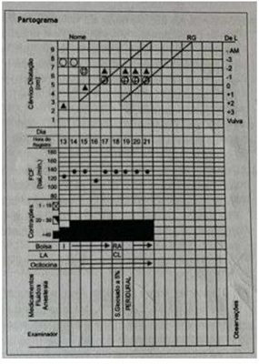
A Período de dilatação e ocitocina endovenosa.
B Período de expulsão e ocitocina endovenosa.
C Período de expulsão e posição materna verticalizada.
D Período de dilatação e posição materna verticalizada.
Questão 31 · Diagnóstico de distocias no partograma · 4000146454Considere a assistência ao parto de uma primigesta, de termo, com AU de 34 cm, dinâmica de 5 contrações em 10 minutos com 40 segundos de duração, colo totalmente dilatado, bolsa rota sem líquido, feto em apresentação cefálica em OET no plano zero de De Lee, com di culdade de se identi carem as fontanelas pela presença de bossa e acavalgamento de sutura. Está nessas condições há 2 horas. A frequência cardíaca fetal está normal. Diante desses achados, é correto
A fazer fórcipe de Kjelland para abreviação do período expulsivo.
B fazer fórcipe de Kjelland por distócia de rotação.
C fazer cesárea por desproporção céfalo-pélvica.
D aguardar o final do período expulsivo, pois o feto está com boa vitalidade.
E introduzir ocitocina em bomba de infusão para coordenar as contrações e corrigir a distócia funcional.
Questão 32 · Obstetrícia · Partograma · 4000146014Analise o partograma reproduzido a seguir e aponte o diagnóstico:
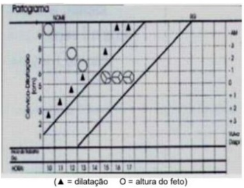
A Período pélvico prolongado
B Parada secundária da dilatação
C Parada secundária da descida
D Fase ativa prolongada
Questão 33 · Parto vaginal operatório · Tipos de f órcipes · Distocia f uncional de objeto de trajeto · 4000145926Uma primigesta, com quarenta semanas e quatro dias de gestação, encontra-se analgesiada, em período expulsivo há 3 h. Passou, então, a apresentar bradicardia fetal persistente, com BCF de 65 bpm há quatro minutos. Ao exame físico: altura uterina – 34 cm; e dinâmica uterina – quatro contrações de 35” em 10’. Ao toque vaginal, colo com dilatação total. Bolsa rota. Apresentação cefálica fletida, sem assinclitismo, em +2 de DeLee e variedade de posição OEA. Nessa situação hipotética, a conduta será fórceps de
A Simpson, com rotação de 45° no sentido horário.
B Simpson, com rotação de 45° no sentido anti-horário.
C Kielland, com rotação de 90° no sentido horário.
D Kielland, com rotação de 90° no sentido anti-horário.
E Kielland, sem rotação.
Questão 34 · Obstetrícia · Parto · Partograma · 4000145561Gestante é admitida na maternidade e a condução do seu parto, segue o seguinte partograma. Considerando que o parto ocorreu em 2 horas e 40 minutos, assinale a alternativa gue NÃO ESTÁ ASSOCIADA a este tipo de parto.

A Hemorragia puerperal materna
B Infecção
C Laceração de trajeto de parto materna
D Lesão de plexo braquial no RN
Questão 35 · Fase ativa prolongada · 4000145505Paciente primigesta, gestação de 39 semanas, concepto adequado para a idade gestacional e pré-natal sem intercorrências. No seu plano de parto, a gestante solicita o uso de analgesia farmacológica para alívio da dor. Foi admitida às 6 horas no centro obstétrico em fase ativa do trabalho de parto, colo 90% apagado, com dilatação de 3cm e duas contrações de 30 segundos cada em 1 O minutos. Inicia-se a construção do partograma, apresentação cefálica, bolsa íntegra, 140bpm (batimento cardíaco fetal), plano de De Lee -3. Às 11 horas estava com colo no, central, dilatado 6cm, apresentação fetal no plano zero de De Lee. Durante o toque houve ruptura espontânea das membranas com saída de líquido amniótico claro. Traçado cardiotocográ co com padrão fetal tranquilizador. Parturiente solicita analgesia. Às 13 horas, dilatação de 7cm, pólo fetal no plano + 1 de De Lee, quando recebeu analgesia. Às 15 horas apresentava 8cm de dilatação, pólo cefálico no plano + 1 de De Lee. Qual o diagnóstico desse caso?
A Parada secundária da descida
B Parada secundária da dilatação
C Fase ativa prolongada
D Fase ativa normal
Revisar: possível letra faltando em enunciado
Questão 36 · Fase ativa prolongada · Conceito · 4000145378Uma mulher de 32 anos, G1 P0, está com 42 semanas de gestação e está tendo o parto induzido por gravidez pós-termo. Ela teve um pré-natal sem complicações. A PA é de 100/60 mmHg. A altura do fundo uterino é de 40 cm. O colo está fechado, tem 3 cm de comprimento, e consistência rme. O obstetra decide utilizar um agente de maturação cervical, o misoprostol intravaginal. Aproximadamente 2 horas após colocar o misoprostol, a paciente tem um episódio de desaceleração fetal prolongado para 80 bpm por 6 minutos. Qual das seguintes é a etiologia mais provável da desaceleração prolongada?
A Descolamento de placenta
B Sepse
C Prolapso do cordão umbilical
D Incompetência istmo cervical
E Hiperestimulação uterina
Questão 37 · Parada secundária da descida · 4000145375Uma mulher de 26 anos, G2G1, com 41 semanas de gestação, está fazendo força há 3 horas sem progresso. Nesse tempo, pelo exame vaginal, permaneceu com o colo completamente dilatado, completamente apagado, no plano O, com a cabeça persistentemente na variedade no occipício posterior (OP). Qual das assertivas a seguir descreve acuradamente a situação?
A A variedade de occipício posterior frequentemente está associada a uma pelve ginecoide.
B O progresso do trabalho de parto é normal se a paciente não tiver um cateter epidural para analgesia, mas é anormal se estiver sendo utilizado analgesia epridural.
C Está contraindicada a cesariana.
D A parte óssea da cabeça fetal provavelmente está no plano de estrieto superior da pelve.
E A melhor descrição é que a paciente teve uma parada da descida.
Questão 38 · Distocia f uncional de objeto de trajeto · 4000145246Sobre a distada fetal assinale a alternativa incorreta.
A Distada fetal é a ocorrência de anormalidades de tamanho ou posição fetal, resultando em dificuldades no parto.
B O diagnóstico da distada fetal é feito por exame clínico, ultrassonografia ou pela resposta à evolução do trabalho de parto.
C O tratamento da distada fetal é feito por manobras físicas para reposicionamento fetal, parto operatório vaginal ou cesariana.
D Na apresentação pélvica verdadeira o feto parece estar sentado com quadris e joelhos flexionados.
Questão 39 · Distocia de dilatação · 4000144064Sobre as discinesias é correto afirmar:
A Hipoatividade uterina caracteriza-se pela diminuição da intensidade, frequência e atividade abaixo de 100 unidades Montevidéu (UM) acarretando em grave prejuízo materno e fetal.
B A hiperatividade costuma ser causada pelo parto obstruído ou pela ocitocina exagerada e o tratamento é decúbito dorsal com cabeceira a 30º ou emprego de inibidores.
C A hipertonia autêntica é causada pelo aumento anormal da frequência das contratações e o tratamento é o decúbito lateral e medicamentos inibidores.
D Na incoordenação de 2º grau notam-se no traçado pequenas contrações isoladas, alternadas com outras maiores que se espalham por zonas mais extensas. O parto tende a ser prolongado porque as isoladas são ineficazes e as que se estendem tem certa ação dilatadora.
E Na distocia cervical ativa o distúrbio é um espasmo funcional do orifício interno do colo, uma vez que não existe espasmo do orifício externo. Uma forma extrema da distocia cervical ativa é o anel de constrição que impede a distensão do istmo.
Questão 40 · Dinâmica uterina · 4000143698Em relação à contratilidade uterina, assinale a alternativa CORRETA:
A Só está presente quando se inicia o trabalho de parto.
B São necessárias 4 contrações em um intervalo de 10 minutos para que se caracterize um trabalho de parto.
C O chamado triplo gradiente descendente é importante para que as contrações sejam efetivas para a dilatação do colo e para a descida da apresentação.
D O período de repouso fisiológico das contrações é o quarto período do parto, quando estas cessam.
E A contração uterina é responsável pelo trombotamponamento que ocorre no 4º período do parto.
Questão 41 · Partograma · 4000143520Observe o partograma abaixo e assinale a resposta
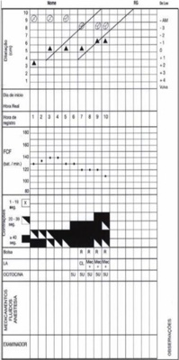
A Ocorreu parada secundária da dilatação.
B Este quadro pode ser compatível com desproporção céfalo-pélvica.
C Não observamos sinais de sofrimento fetal.
D Há indicação de cesariana após horas de trabalho de parto.
E Este retrato da evolução do parto pode ser encontrado em casos de diabetes gestacional descompensado com fetos grandes para a idade gestacional.
Questão 42 · Parada secundária da descida · 4000143453Primigesta, 29 anos, 41 semanas de gestação, apresenta evolução do trabalho de parto segundo partograma abaixo. Altura uterina 39 cm, avaliação da bacia: conjugado diagonal: 11,0 cm; espinhas ciáticas salientes, bituberoso: 10 cm e ângulo subpúbico < 90°. À meia-noite, foi instalada analgesia peridural contínua. Considerando a avaliação realizada às 3:00 h, o diagnóstico do partograma e a conduta, RESPECTIVAMENTE, são:
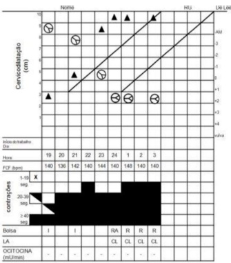
A parada secundária da descida / aplicação do fórcipe de Kielland.
B parada secundária da rotação / realização da cesárea.
C período pélvico prolongado / ultimação do parto com o vácuo-extrator.
D parada secundária da descida / realização da cesárea.
E parada secundária da rotação / aplicação do fórcipe de Kielland.
Questão 43 · Obstetrícia · Partograma · 4000143345Observe o partograma seguinte. O diagnóstico desse partograma é
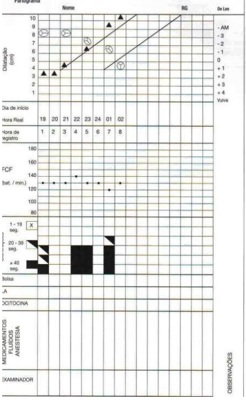
A parada secundária da descida.
B parto eutócico fisiológico.
C parto taquitócito.
D divisão pélvica prolongada.
E fase ativa prolongada.
Questão 44 · Segundo periodo expulsivo · Período expulsivo prolongado · Distocia de descida · 4000143018No período expulsivo prolongado, com feto em apresentação cefálica etida, associado à hipocinesia uterina, a medida mais apropriada para observar o desprendimento fetal é:
A Manobra de kristeller
B Aplicação de fórceps de alívio
C Infusão venosa de Ocitocina
D Operação cesariana
Questão 45 · Obstetrícia · Partograma · 4000142179FERNANDES, Cesar Eduardo; SILVA DE SÁ, Marcos Felipe. Tratado de Obstetrícia Febrasgo. 1. ed. Rio de Janeiro: ELSEVIER, 2019. No que se refere aos partogramas apresentados, é correto afirmar que o partograma de número
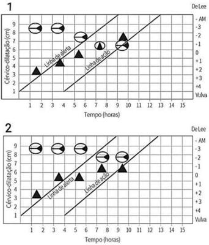

A 1 representa uma distocia de descida chamada fase ativa prolongada. A causa dessa distocia é a desproporção cefalopélvica que, na maioria dos casos, é secundária a apresentações fetais defletidas ou em variedades de posição transversas ou posteriores.
B 2 representa uma distocia de dilatação chamada parada secundária da dilatação. A principal causa dessa anormalidade é a presença de contrações em número ou qualidade insuficiente para promover a dilatação do colo uterino.
C 3 representa uma distocia de descida chamada parada secundária da descida. A verticalização da parturiente, a rotura de bolsa amniótica e a rotação manual do polo cefálico podem auxiliar em sua correção.
D 4 representa uma distocia de descida chamada período expulsivo prolongado. A principal causa dessa anormalidade é a desproporção cefalopélvica.
E 4 representa uma distocia de dilatação chamada parto taquitócico. Essa distocia está associada a maiores riscos de hemorragia puerperal, tanto por atonia uterina quanto por lacerações de trajeto.
Questão 46 · Distocia f uncional de objeto de trajeto · O trabalho de parto e o parto · Obstetrícia · 4000141814A partir de quantas contrações em 10 minutos durante o trabalho de parto, é considerado taquissistolia?
A 4
B 5
C 6
D 7
E 8
Questão 48 · Parto taquitócito · 4000141030Frente a um diagnóstico de distócia por hiperatividade (parto taquitócico) sem obstrução à passagem do feto, a melhor orientação será realizar a
A cesárea, evitando-se assim a ocorrência de rotura uterina.
B amniotomia precoce, sem analgesia, auxílio manual à ampliação do canal de parto (colo e períneo).
C amniotomia precoce com agulha de raquianestesia, uterolítico e observação rigorosa da dinâmica uterina.
D ocitocina em bomba de infusão, bloqueio pudendo, rápida hidratação venosa e ampla episiotomia.
E amniotomia tardia, analgesia precoce, revisão cuidadosa do canal de parto e observação rigorosa do recém- nascido.
Questão 49 · Parto vaginal operatório · Partograma · Avaliação da vitalidade f etal intraparto · 4000140850Primigesta de 21 anos de idade, está com 38 semanas de gestação e iniciou trabalho de parto espontâneo. O partograma e a cardiotocografia estão apresentados a seguir. Qual é o método indicado para ultimação do parto?


A Abreviação com vácuo extrator.
B Cesárea segmentar transversa.
C Aguardar parto espontâneo.
D Rotação com fórcipe Kielland.
Questão 50 · Inf ecção puerperal endometrite puerperal · Partograma · 4000140848Paciente hígida foi submetida a maturação de colo com misoprostol e posterior indução de parto por pós-datismo, conforme partograma apresentado. Paciente evoluiu com dor e di culdade de deambulação no pós-parto, necessitando analgésico de resgate. No 2º dia pós- parto, apresenta temperatura oral aferida de 38,6 C. No exame clínico, está em bom estado geral e eupneica. O abdome é doloroso à palpação, com sinal de descompressão brusca negativo e ruídos hidroaéreos presentes. A ferida cirúrgica tem bom aspecto. A loquiação é fétida. A conduta inicial indicada para essa paciente é:

A Administrar antibiótico.
B Aspirar restos ovulares.
C Anticoagulação plena.
D Histerectomia subtotal.
Questão 52 · Aplicação do f órcipe · Período expulsivo prolongado · 4000140773Observe o partograma a seguir Considerando o partograma, o obstetra resolveu realizar uma cardiotocogra a às 07 horas, a m de monitorar o período expulsivo, cujo resultado está apresentado abaixo. Com base na cardiotocografia e no partograma, marque a afirmativa correta.
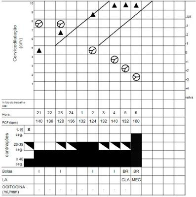
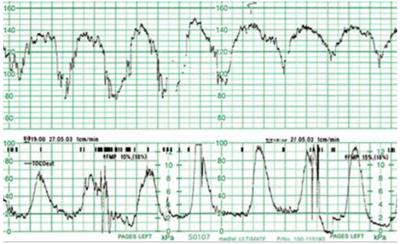
A Deve-se realizar manobras de ressuscitação intrauterina e abreviação do período expulsivo com a aplicação de fórceps.
B A presença de mecônio às 06 horas no partograma já confirmava o diagnóstico de sofrimento fetal intraparto.
C O índice PH de 7,25 no sangue colhido do cordão umbilical no pós-parto imediato confirma o diagnóstico de sofrimento fetal agudo (intraparto).
D Observam-se na cardiotocografia desacelerações do tipo I (DIP umbilical) e manobras de ressuscitação intrauterina e cesariana estão indicadas.
Questão 53 · Período expulsivo prolongado · 4000140771Observe o partograma a seguir. Com base no partograma apresentado, marque a afirmativa correta.

A Observa-se uma desproporção céfalo-pélvica, e a cesariana é indicada.
B A variedade de posição no momento da abertura do partograma é occipito-esquerda posterior.
C Por se tratar de um período pélvico prolongado, manobras como a verticalização da posição materna podem auxiliar na ultimação do parto.
D Após 04 horas, observa-se uma parada secundária de descida, e a otimização das contrações com o uso de ocitocina ajudará na ultimação do parto.
Questão 54 · Diagnóstico de distocias no partograma · Partograma · 4000140496Considere o traçado de partograma mostrado na imagem abaixo. Nesse caso,
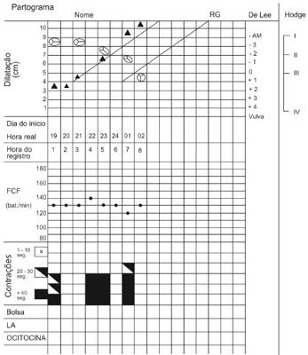
A a linha de batimento cardíaco fetal mostra que o feto não está bem oxigenado.
B a linha de alerta é a segunda linha oblíqua, que se encontra mais à direita.
C observa-se desproporção céfalo-pélvica com possível formação de bossa no recém-nascido.
D os triângulos representam a dilatação cervical, que ocorreu de forma progressiva e fisiológica.
E o partograma mostra contrações uterinas fracas e irregulares.
Questão 55 · Distocia de descida · 4000133156Primigesta de 39 semanas fez apenas uma consulta pré-natal de primeiro trimestre, que evidenciava glicemia de jejum 95 mg/dl. Foi admitida em trabalho de parto espontâneo e a evolução está descrita no partograma em anexo. Diante da interpretação adequada do partograma, assinale o diagnóstico e conduta para o caso:
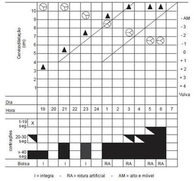
A Período expulsivo prolongado. Indicar fórcipe de alívio.
B Distocia funcional por hipoatividade. Prescrever ocitocina endovenosa.
C Desproporção. Cefalopélvíca. Indicar cesárea.
D Parada secundária da dilatação. Indicar fórcipe de Simpson.
Questão 56 · Diagnóstico de distocias no partograma · Obstetrícia · Partograma · 4000129803Parturiente, 38 anos de idade, 40 semanas, primi- gesta, apresenta evolução do trabalho de parto conforme partograma da figura. Exame físico: sinais vitais preservados, altura uterina 35cm, feto único. Avaliação da bacia: conjugado diagonal medindo 13 cm, espinhas ciáticas médias, ângulo subpúbico de 90° e medida do diâmetro bituberoso de 11 cm. A distocia diagnosticada pelo partograma e a provável causa, respectivamente, são:
A Fase ativa prolongada, desproporção cefalopélvica absoluta.
B Parada secundária da dilatação, desproporção cefalopélvica relativa.
C Parada secundária da descida, defletida de primeiro grau.
D Parada prolongada da dilatação, vício pélvico relativo.
E Fase ativa prolongada, defletida de primeiro grau.
Questão 57 · Diagnóstico de distocias no partograma · Parada secundária da dilatação · Distocia de dilatação · 4000130393Mulher. 25a, G2P1C0A0, com idade gestacional de 39 semanas procura o pronto atendimento com queixa de contrações. Exame obstétrico à admissão: altura uterina de 39cm, batimentos cardíacos fetais= 144bpm e dinâmica uterina: 3 contrações de moderada intensidade e duração média de 45 segundos em 10 minutos. A evolução do trabalho de parto está representada no partograma: O DIAGNÓSTICO É:
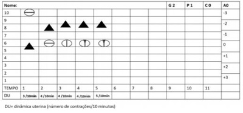
A Desproporção cefalopélvica.
B Distócia de rotação.
C Parto eutócico.
D Período expulsivo prolongado.
Questão 58 · Distocia f uncional de objeto de trajeto · Obstetrícia · Parto · 4000127689Ao analisar o partograma de uma nulípara, 38 semanas de gestação, você observa que a mesma internou com 7 centímetros de dilatação cervical, apresentação cefálica, bolsa das águas rota e boa vitalidade fetal. Após 4 horas do exame acima descrito, observa-se que a dilatação cervical permanece a mesma, apesar da existência de contrações uterinas em número e intensidade adequados. A causa dessa distócia, na maioria das vezes, é devido a:
A Sinclitismo de Nagëlle
B Circular cervical de cordão
C Apresentações fetais defletidas
D Amniorrexe prematura
Questão 59 · Parada secundária da descida · 4000120652Ao analisar o partograma de uma parturiente em franco trabalho de parto, foram observadas parada secundária da dilatação com 8 cm e apresentação cefálica em –1 de DeLee, acompanhadas de dinâmica uterina intensa de cinco contrações em dez minutos. Com base nesse caso hipotético, assinale a alternativa que apresenta, respectivamente, o diagnóstico mais provável e a melhor conduta a ser adotada.
A desproporção cefalopélvica e fórcipe
B desproporção cefalopélvica e cesariana
C distocia funcional e amniotomia
D distocia funcional e cesariana
E distocia de rotação e fórcipe
Questão 60 · Parada secundária da dilatação · 4000119898Parturiente de 32 anos, G3P2A0C0, está sob assistência ao trabalho de parto e com evolução apresentada no partograma a seguir. O diagnóstico identificado na evolução do trabalho de parto e a conduta são:
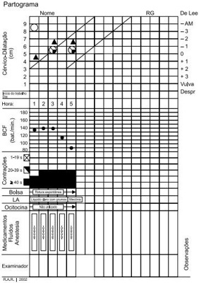
A parada secundária da dilatação e descida; cesárea.
B parada secundária da dilatação e descida; fórcipe de Kjelland.
C parada secundária da dilatação; fórcipe de Kjelland.
D parada secundária da dilatação; cesárea.
Questão 61 · Distocia de dilatação · Distocia de dilatação · Primeiro periodo dilatação · 4000113938Primigesta, 30 anos, com 40 semanas, é internada na fase ativa do trabalho de parto, com boa vitalidade fetal na admissão. Pré-natal sem intercorrências. Ela traz um plano de parto no qual rejeita o uso de ocitócicos, analgesia farmacológica e episiotomia. A parturiente se mantém bastante ativa, com alternância de posturas. As 21 horas, ela é reavaliada, apresentando sinais vitais normais, altura uterina de 37 cm, atividade uterina de 4 contrações de 50 segundos/10 minutos e batimentos cardíacos fetais sem desacelerações. O registro gráfico do trabalho de parto está representado na figura. Escolha a alternativa com a melhor conduta nesse caso.

A Indicar resolução de gestação por parto cesárea.
B Promover corioamniorrexe artificial imediatamente.
C Convencer a paciente a aceitar analgesia farmacológica.
D Explicar sobre a necessidade de ocitocina endovenosa.
Questão 62 · Parada secundária da dilatação · 4000109344O partograma abaixo caracteriza:
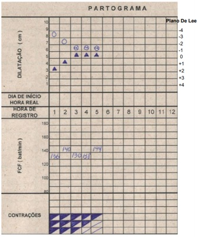
A Fase de latência.
B Vício pélvico.
C Distocia funcional.
D Expulsivo prolongado. ida oib pr ed
Questão 63 · Parada secundária da dilatação · 4000103979Qual a melhor classificação desse partograma?
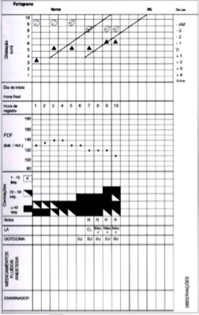
A Descida lenta da apresentação
B Parada secundária da dilatação
C Parada secundária da descida
D Parto taquitócico
Questão 66 · Rotura uterina · 4000076619G5 P4 (3PN 1C), apresenta hipertonia uterina no nal da fase de dilatação. Após a retirada da ocitocina e com início do expulsivo, cessa a hipertonia, mas ocorre sangramento volumoso. A paciente queixa de dor na escápula direita e evolui com hipotensão, hematúria na sonda, desaceleração dos batimentos cardíacos fetais e subida da apresentação. A hipótese diagnóstica é:
A Descolamento de placenta.
B Toco traumatismo materno.
C Rutura uterina.
D Distócia cervical dinâmica.
E Inversão do tríplice gradiente descendente.
Questão 67 · Diagnóstico de distocias no partograma · Componentes do partograma · Obstetrícia · 4000036135Em relação ao partograma, é correto afirmar:
A A fase latente do trabalho de parto tem duração menor que a fase ativa, geralmente até 12 horas, e a conduta deve ser expectante.
B Se a linha de alerta for ultrapassada, existe o risco iminente de sofrimento fetal.
C A parada secundária de descida é uma distocia do período de dilatação, e a fase ativa prolongada é uma distocia do período pélvico.
D Na parada secundária de dilatação, a dilatação permanece a mesma em dois ou mais toques consecutivos, realizados em intervalo de duas ou mais horas entre eles, e a causa principal é a desproporção cefalopélvica relativa ou absoluta.
Questão 68 · Diagnóstico de distocias no partograma · 4000032866Gestante, 22 anos, G2P0A1, idade gestacional 39 semanas é admitida para assistência ao trabalho de parto. Na hora de registro 8 do partograma a equipe assistencial reavalia a gestante e faz o seguinte registro conforme figura abaixo. Assinale a alternativa que apresenta a conduta MAIS ADEQUADA e sua justificativa CORRETA.

A Acompanhamento habitual, pois o diagnóstico é de trabalho de parto eutócico
B Deambulação materna, pois o diagnóstico é de parada secundária de descida
C Operação cesariana, pois o diagnóstico é de desproporção cefalopélvica
D Prescrição de ocitocina, pois o diagnóstico é de parada secundária de dilatação
Questão 71 · Parada secundária da descida · 4000130372Mulher, 25a, G1P0A0C0, com idade gestacional de 39 semanas e 3 dias apresenta evolução do trabalho de parto segundo o partograma abaixo: O DIAGNÓSTICO É:
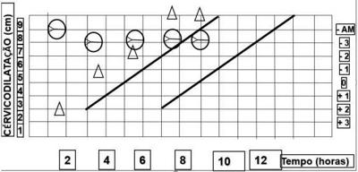
A Parada secundária da descida por desproporção céfalo-pélvica.
B Parada secundaria da dilatação por distocia funcional.
C Fase ativa prolongada por contratilidade uterina insuficiente.
D Parto taquitócico por distocia funcional.
Questão 72 · Parada secundária da dilatação · Indicações de cesárea · 4000119123Primigesta de termo, apresenta o seguinte partograma: É correto afirmar que há:
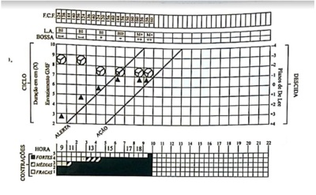
A Evolução adequada da descida devendo-se aguardar mais de 1 ou 2 horas para o parto.
B Desproporção cefálico-pélvica, com grande chance de necessidade de cesárea.
C Distocia de rotação devendo-se aplicar fórceps de rotação (Kielland).
D Parada secundária da descida devendo-se aplicar fórceps de alívio.
Questão 73 · Diagnóstico de distocias no partograma · Parada secundária da dilatação · Distocia de dilatação · 4000113688Em relação ao partograma abaixo, é correto afirmar:
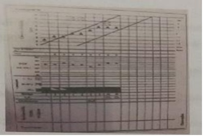
A Caracteriza-se por um parto eutócico;
B Não permite identificar risco apra o feto;
C É típico de amniorrexe prematura;
D Identificar-se uma parada de progressão
E Nenhuma das anteriores
Questão 74 · Fase ativa prolongada · 4000112250O prolongamento da fase ativa do trabalho de parto deve-se a um dos fatores a seguir, exceto:
A Desproporção cefalopélvica.
B Maior tônus da musculatura uterina.
C Uso de anestesia de condução.
D Má posição fetal.
Questão 75 · Parada secundária da dilatação · 4000107720Primigesta, 21 anos, sem doenças, pré-natal sem intercorrências, interna para assistência obstétrica após início espontâneo do trabalho de parto com 40 semanas. Em uso apenas de polivitamínicos. Exame: sinais vitais e exame físico geral normais. Altura uterina 36 cm. A evolução de seu trabalho de parto está demonstrada no partograma abaixo (Figura1). no momento, a paciente está em posição verticalizada, deambula com frequência e tem aceito métodos de alívio não farmacológicos da dor. Às 15 horas, na ausculta fetal intermitente, surgiram dúvidas sobre a presença de desacelerações, motivo pelo qual foi realizado o traçado contínuo da frequência cardíaca fetal mostrado como Figura 2. Após análise de ambas as guras, escolha a melhor conduta na condução deste trabalho de parto.
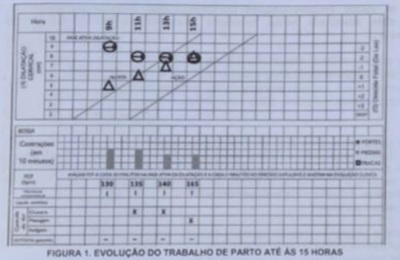
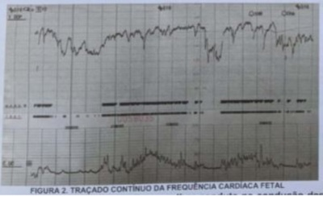
A Conduta expectante.
B Resolução da gestação por cesárea.
C Prescrição de ocitocina endovenosa.
D Instituição de manobras de reanimação fetal.
Questão 76 · Progressão do trabalho de parto · 4000106732Mulher de 23 anos, primigesta, com gestação tópica de 39s e 3 dias, encontra-se em trabalho de parto. Considerando o partograma abaixo sua evolução indica:
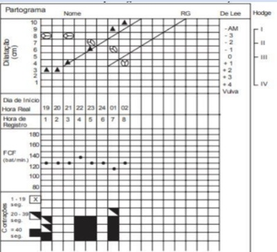
A Fase ativa prolongada.
B Parada secundária da dilatação.
C Desproporção cefálo-pélvica.
D Trabalho de parto fisiológico.
Questão 77 · Parto taquitócito · 4000098147Mulher, 25a, primigesta, idade gestacional de 39 semanas, apresentou evolução do trabalho de parto e parto de acordo com o partograma: AS COMPLICAÇÕES ASSOCIADAS A ESSA EVOLUÇÃO SÃO:
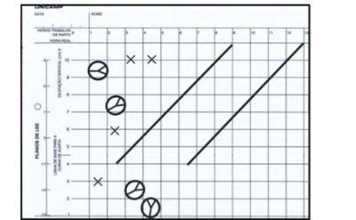
A Lesão de trajeto, hipotonia uterina e hemorragia ventricular no recém-nascido.
B Rotura uterina, sofrimento fetal agudo e distócia de ombro.
C Tocotraumatismo, sofrimento fetal agudo e distócia funcional.
D Atonia uterina, hemorragia ventricular no recém-nascido e distócia de ombro.
Questão 78 · Parada secundária da dilatação · 4000071753Analisando o partograma abaixo, qual o diagnóstico e conduta?
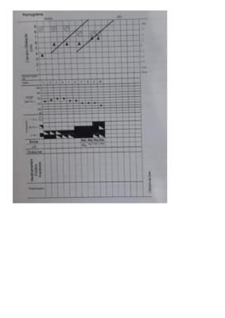
A Partorama normal. Seguir com assitência ao parto
B Desproporção céfalo-pélvica. Fazer ocitocina
C Parada de dilatação. Realizar cesariana
D Distócia de rotação. Fazer uso de fórceps
Questão 79 · Diagnóstico de distocias no partograma · Obstetrícia · 4000057268Considere o registro partograma abaixo. A impressão diagnóstica e conduta mais adequada são:
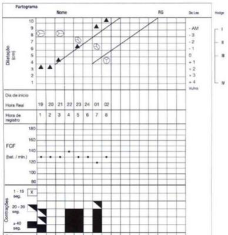
A Período pélvico prolongado, estimular deambulação.
B Parto taquitócico, realizar revisão do canal de parto.
C Parada secundária da dilatação, administrar ocitócitos.
D Parada secundária da descida, indicar parto cesariano.
E Parto eutócico, orientar sobre os eventos fisiológicos do trabalho de parto.
Questão 80 · Parada secundária da dilatação · 4000020379Você assume o plantão no centro obstétrico e se depara com o partograma abaixo. Qual a principal causa desse tipo de distócia?
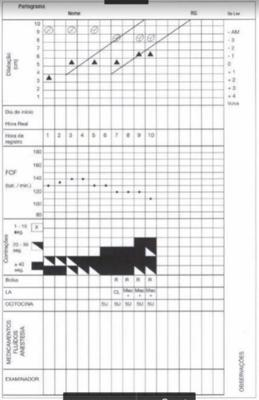
A Assinclitismo.
B Taquissistolia.
C Hipocontratilidade uterina.
D Desproporção cefalopélvica.
Questão 81 · Progressão do trabalho de parto · Dilatação cervical · 4000006390Primigesta, 41 semanas, foi submetida a preparo de colo e indução do parto. Analise o partograma apresentado na figura. Nesse caso, as características importantes do partograma, para o prognóstico de sucesso do parto por via vaginal, são:
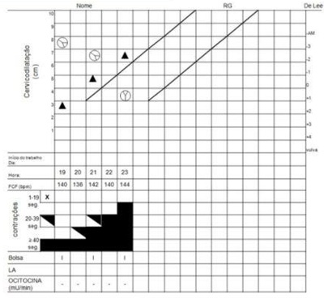
A Variedade de posição OEP e batimentos cardíacos fetais normais.
B Dilatação do colo uterino de 7 cm e 4 contrações uterinas em 10 minutos.
C Descida da apresentação em +1 e bolsa das águas rota.
D Bolsa das águas íntegra e ter completado a rotação interna para OP.
E Dilatação do colo uterino de 7 cm e bolsa das águas íntegra.
Questão 84 · Parto taquitócito · 4000127576Em relação ao partograma, é CORRETO afirmar:
A A parada secundária de dilatação é diagnosticada por 2 toques sucessivos e com intervalo de 1 hora no trabalho de parto ativo.
B O parto precipitado é diagnosticado quando a dilatação cervical e a descida e expulsão fetal ocorrem num período de até 4 horas.
C Não há necessidade de se registrar o uso da analgesia, porém deve-se anotar aintensidade das contrações uterinas, a infusão de drogas, os batimentos cardíacos fetais, a dilatação cervical e a posição e descida do polo cefálico.
D Por convenção, registra-se a dilatação cervical com um quadrado e a variedade deposição fetal com uma circunferência.
E Na fase ativa prolongada, a dilatação do colo ocorre numa velocidade < 1 cm/hora e éindicativo de cesárea quando ultrapassa a linha de alerta.
Questão 85 · Obstetrícia · Partograma · 4000124456Primigesta com 38 semanas de gestação chegou ao centro obstétrico em trabalho de parto. A altura uterina era de 36 cm, e o peso fetal estimado de 3.600 g. A evolução do trabalho de parto pode ser visualizada no partograma abaixo. Qual a próxima conduta obstétrica indicada às 6 horas?
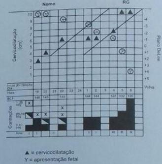
A Infundir ocitocina.
B Aplicar fórceps de Kielland.
C Indicar apalgesia peridural.
D Indicar cesariana.
E Iniciar os esforços expulsivos.
Questão 86 · Progressão do trabalho de parto · 4000118451Observe o partograma abaixo, referente à primigesta, 38 semanas, BCF 160 bpm, dinâmica uterina 4/10min, fortes. Qual deve ser sua conduta?
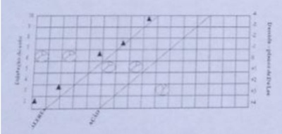
A Aguardar o parto normal que deve ocorrer em pouco tempo.
B Aumentar a infusão de ocitocina pois a descida da cabeça não está ocorrendo na velocidade desejada.
C Indicar cesária, já que a progressão do parto não está adequada.
D Indicar um fórceps de alívio, já que há início de sofrimento fetal e o parto ainda vai demorar.
Questão 87 · Progressão do trabalho de parto · 4000105416O partograma abaixo sugere: .
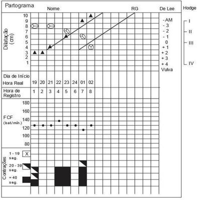
A Fase ativa prolongada.
B Parada secundária da dilatação.
C Desproporção cefalopélvica.
D Distocia funcional.
E Trabalho de parto fisiológico
Questão 88 · Período expulsivo prolongado · 4000104636No acompanhamento de um trabalho de parto, o partograma descreve na última hora, dilatação total e feto em altura de apresentação +3 de De Lee, em apresentação cefálica em OP. A conduta mais adequada em relação ao parto é:
A Aguardar parto espontâneo e se necessário aplicar fórcipe de alívio.
B Condução do caso com ocitocina por se tratar de distócia de rotação.
C Cesárea por distócia de apresentação.
D Fórcipe de kielland por se tratar de distócia de rotação.
Questão 90 · Parto taquitócito · 4000100008Primigesta de 40 semanas de idade gestacional é admitida em trabalho de parto com toque vaginal de 4 cm, 100% esvaecido, apresentação cefálica em plano -2 de DeLee. A frequência cardíaca fetal está em 150 bpm; rítmica e a dinâmica uterina se apresenta com 4 contrações fortes de 45 segundos em 10 minutos. Duas horas após evolui para parto vaginal sem analgesia. As complicações associadas a essa evolução são:
A Inversão uterina, hipotonia uterina e hemorragia cerebral no recém-nascido.
B Hipotonia/atonia uterina, laceração de trajeto e hemorragia cerebral no recém-nascido.
C Acretismo placentário, hemorragia do quarto período, hemorragia retiniana no recémnascido.
D Laceração de trajeto, sofrimento fetal agudo e retenção placentária.
Questão 91 · Diagnóstico de distocias no partograma · 4000099980Primigesta de 40 semanas de idade gestacional, admitida em trabalho de parto, submetida a analgesia com 6 cm de dilatação, quando já apresentava bolsa rota. A partir desse momento foi conduzida com ocitocina mantendo 4 contrações fortes, em média, em 10 minutos. A evolução do parto está representada no partograma abaixo. A conduta é:
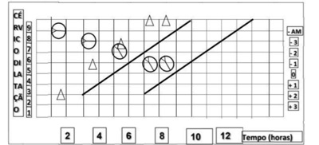
A Fórcipe de Kielland por distocia de rotação.
B Cesárea por distocia funcional.
C Fórcipe de Simpson para abreviação do período expulsivo.
D Cesárea por desproporção cefalopélvica.
Questão 92 · Fase ativa prolongada · 4000070709Paciente de 20 anos, GIIP0AI, dá entrada na emergência na 40ª semana de gestação em trabalho de parto. Relata perda de líquido há, aproximadamente, 40 minutos. Nega comorbidades ou qualquer outra queixa. Ao exame, verifica-se PA = 100 x 60 mmHg; AFU = 37 cm; BCF = 152 bpm; tônus uterino normal; metrossístoles 2/10’/40’’; colo em centralização, 100% apagado, cefálico, com 3 cm de dilatação e líquido claro com grumos. Com base no partograma do acompanhamento do trabalho de parto, mostrado a seguir, o diagnóstico é:
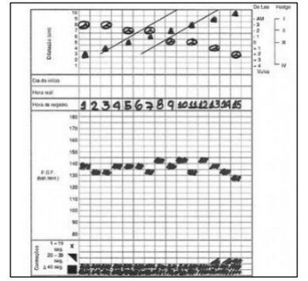
A Fase ativa prolongada.
B Período pélvico prolongado.
C Parada secundária da descida.
D Parada secundária da dilatação.
Questão 93 · Apresentação f etal · Obstetrícia · 4000050971Primigesta, com 39 semanas de gestação, foi internada e iniciado o acompanhamento com o partograma. Com base na figura abaixo, assinale a alternativa que corresponde ao período clínico e à variedade de posição fetal na última hora anotada.
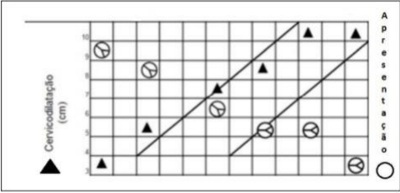
A Primeiro período – occipito-direita-transversa.
B Primeiro período – occipito-esquerda-transversa.
C Segundo período – occipito-direita-transversa.
D Segundo período – occipito-esquerda-transversa.
E Terceiro período – occipito-direita-transversa.
Questão 94 · Parada secundária da descida · 4000034226Uma paciente primigesta com gestação a termo, concepto adequado para a idade gestacional e pré-natal sem intercorrências, é internada às 9 horas com duas contrações de 30 segundos em 10 minutos. Ao exame, o colo uterino está completamente apagado, médio na consistência e permeável para 3 cm de dilatação. Inicia-se a construção do partograma: apresentação cefálica; bolsa íntegra; 140 bpm de FCF; plano de DeLee -3. A avaliação das 14 horas mostrou colo no central; permeável para 8 cm; plano de DeLee zero; traçado cardiotocográ co tranquilizador. Às 15 horas ocorreu a ruptura da bolsa com líquido meconial uido e, às 16 horas, a dilatação do colo uterino está completa, plano de DeLee zero e 3 contrações em 10 minutos, durando 40 segundos. Às 17 e às 18 horas, observou-se a mesma condição anotada na avaliação das 16 horas, mas agora com bradicardia fetal durante as contrações. Qual o diagnóstico mais provável neste caso?
A Fase ativa prolongada.
B Hipocinesia uterina.
C Parada secundária da descida da apresentação.
D Parada secundária da progressão da dilatação.
Revisar: possível letra faltando em enunciado
Questão 95 · Fase ativa prolongada · 4000008079Parturiente, 40 semanas e 2 dias, primigesta, pré-natal sem intercorrências. Ao exame físico: bom estado geral, afebril, normotensa, altura uterina = 34 cm; FCF = 140 bpm; rítmicos, sem desacelerações, na avaliação da bacia constata-se promontório inatingível, espinhas ciáticas médias, ângulo subpúbico de 90°. Apresenta evolução do trabalho de parto conforme o partograma: os diagnósticos constatados no partograma e a conduta nesse caso, respectivamente, são: Respostas: 1 12 23 34 45 56 67 78 89
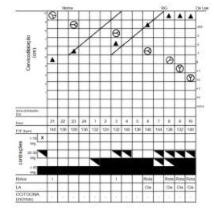
A Fase ativa prolongada e período expulsivo precipitado; ocitocina endovenosa e massagem perineal.
B Fase ativa protraída e período expulsivo prolongado; cesárea por desproporção feto pélvica relativa.
C Fase ativa prolongada e período pélvico prolongado; ocitocina endovenosa e posições verticalizadas.
D Fase ativa prolongada e período pélvico prolongado; aplicação do fórcipe de alívio.
E Parada secundária da dilatação e período expulsivo prolongado; ocitocina endovenosa.